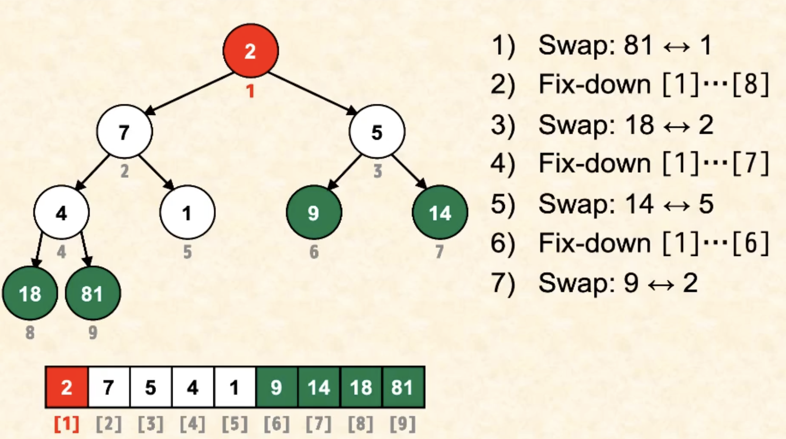

281-recordLab 1Lab 流程关于 CAENMac mission controlMakefilePerfValgrindvector::reserve一个冷知识: C++并不支持 int x,y = 1 的 initialization syntaxgetopt_longLec 2heapvector/deque + make_heap 实现Priority Queue使用 stl built-in 的 PQLec 3Amortized complexityLec 5 - RecursionFourth Condition of Master ThmAlgorithm Problem: 2D table searchLec 6 - Arrays & Containers2D dynamic array with double ptrPros and Cons of fixed/dymc arrayC++11 range-based for loopAlgorithm Problem: Finding the majority elementContainers使用 double ptr instead of random access to traversalWhat to Store/Get in a containerUse dynamic array in C++Best deep copy 方法：copy-swap methodC++11: Move ctor for r-valueMove syntax 的好处Array class operation: [] 和 insertLab 2Algorithm Problem: Find 1/k ^th element of Linked ListAlgorithm Problem: Sort a StackAlgorithm Problem: 用两个 stack 写一个 queueLec 7 - STLTypes of IteratorsSTL: 每个容器都支持的 iteratorsMemory overheadsimple syntax for 3 dim vectorFunctorLambda使用 lambda 表达式起到 functor 一样的作用captures list 的用例Algorithm problem: functorstd::randomLec 8 - Heap & PQ & HeapsorttreeComplete Binary tree: 可以用 array 表示Heap-ordered treeHeapAlter element: fixup(), fixdown() 以保持 Heap 结构Priority QueueHeapifyAlgorithm: Heapsort
281-record
Lab 1
Lab 流程
发现其实很简单：
在 lab 上做好 notes 并完成手写
在 lab 后直接 assignment pdf，一步一步做就可以。其中一部分是 quiz 一部分是 autograder.
关于 CAEN
直接在 VSCode 里打开
ssh rynnefan@login.engin.umich.edu连接到 remote 服务器，我自己的 remote 文件夹。VSCode 有一个非常人性化的点是会记得 remote 文件夹。打开了一次 lab1 之后下次打开 VSCode Remote 就有一个通往这个 /home/rynnefan/eecs-281/lab1 的快捷方式了。
我们的东西必须兼容 CAEN 的环境才能得分。其实并不是一个必要的事情，因为远程 linux 和本地 linux 差别不大。但是这样的好处就是在 mac 上我也可以编辑用 linux 环境了。
在本地运行，把本地的文件夹一整个复制到 remote 的一个文件夹中。：
xxxxxxxxxxscp -r ../auto-Music-Sorting rynnefan@login.engin.umich.edu:/home/rynnefan/eecs-281/lab1如果要传回本地就倒过来，在本地运行:
xxxxxxxxxxscp -r rynnefan@login.engin.umich.edu:/home/rynnefan/eecs-281/lab1/example-Perf ~/desktop
如果只要复制一个文件就去掉 -r.
这个东西麻烦就在于不能使用 rsa免密。。。。每次连接远程都需要输入密码
Mac mission control
F3 直接打开 mac mission control 来控制桌面会快很多。。
Makefile
看起来很长但其实只要做四件事情：
根据 spec 更改
IDENTIFIER根据 spec 更改
EXECUTABLE把
PROJECTFILE更改成有 main 函数的那个 cpp 文件（直接把 main 放在 EXECUTABLE 同名 cpp 里就可以）更改 dependency
Perf
Perf 是一个 linux 系统的 profiling tool.
必须要 -g3 flag 才可以运行。不过我们的 Makefile 的 debug 模式已经加上了。
所以先 make debug：
xxxxxxxxxxmake debugperf record -F 1000 --call-graph dwarf -e cycles:u ./executable_debugperf report用 symbol 表示只显示用户程序中的库和符号
xxxxxxxxxxperf report --sort symbolValgrind
Valgrind 可以检测未初始化的变量；out of bound 的读写；memory leak；
并且可以 memory profiling.
运行十分方便。
xxxxxxxxxxmake valgrindvalgrind ./executable_valgrind用 more 指令可以让结果分页，这样不会刷屏。more 模式下，空格进入下一页，enter进入下一行
xxxxxxxxxxvalgrind ./exeutable_valgrind |& morevector::reserve
如果你试图向 vector 中插入超过 capacity() 的元素，那么 vector 会进行内存重新分配。
reserve 只是增加了 vector 的容量（即 capacity()），但不会增加或减少 vector 中的元素。如果提前 reserve，那么当 vector 的元素数量达到预留的容量时，不会触发内存重新分配操作，避免性能上的开销。
一个冷知识: C++并不支持 int x,y = 1 的 initialization syntax
xxxxxxxxxxint x, y = 1;
In this case, only y is initialized to 1, while x remains uninitialized.
但是可以:
xxxxxxxxxxint x=1, y=1;
getopt_long
xxxxxxxxxx{"level", required_argument, nullptr, 'l'}required-argument 表示如果加了这个 option 必须带参数；option-argument 表示这个 option 可以不带参数; no_argument 表示这个 option 并没有参数.
(nullptr) is used to indicate there’s no flag variable associated with this option (or another specific value can be used if a variable is needed).
l 是这个 option 的简写.
xxxxxxxxxx while ((option = getopt_long(argc, argv, "p:h", longOpts, &option_index)) != -1) { switch (option) { case 'p': //... case 'h': //...其中 p:h 表示所有的选项。 一个选项之后的冒号取决于：
无冒号：
no_argument，选项不接受参数。例如，p表示选项-p不需要任何参数。一个冒号 (
:)：required-argument， 选项 必须 带有一个参数。例如，d:表示选项-d需要一个参数。两个冒号 (
::)：option-argument，选项的参数是 可选的。例如，o::表示选项-o可以有一个参数，但它是可选的。
Lec 2
heap
heap 是一种树形数据结构，分为 max_heap 和 min_heap.
最大堆（Max Heap）：在最大堆中，每个节点的值都大于或等于其子节点的值。因此，根节点始终包含整个堆中的最大值。
最小堆（Min Heap）：在最小堆中，每个节点的值都小于或等于其子节点的值。因此，根节点始终包含整个堆中的最小值。
xxxxxxxxxx10/ \5 3/ \ / \4 1 2 0//max heap
c++ 具有 built-in 的 make_heap 函数，对于所有支持 random access 的 container 都可以使用，make_heap() 是一种排序方式，允许你使用自己定义的比较函数来对一个 container 进行 heap 排序.
三个参数： container 的 begin(), container的 end() 以及比较函数。第三个参数可以忽略, for built in data
xxxxxxxxxx// 包含 heap 操作的函数struct Task { int id; int priority; Task(int id, int priority) : id(id), priority(priority) {}};// 比较函数，定义最小堆的排序规则bool compareTasks(const Task& t1, const Task& t2) { return t1.priority > t2.priority;}int main() { std::vector<Task> tasks; tasks.emplace_back(1, 10); tasks.emplace_back(2, 5); tasks.emplace_back(3, 20); // 创建最小堆 std::make_heap(tasks.begin(), tasks.end(), compareTasks); // 新加入元素, 重新调整堆. v.push_back(25); std::push_heap(v.begin(), v.end()); // 重新调整堆 std::cout << "Tasks in heap order:" << std::endl;}vector/deque + make_heap 实现Priority Queue
PQ 的 underlying container 是赋予 heap 性质的 vector
xclass PriorityQueue {public: // 插入元素到堆中，并调整堆结构 void push(Task element) { data.push_back(element); // 插入到 vector 的末尾 std::push_heap(data.begin(), data.end(), comp); // 调整堆结构（上浮） } // 删除堆顶元素，并调整堆结构 void pop() { std::pop_heap(data.begin(), data.end(), comp); // 最大元素放到末尾 data.pop_back(); // 删除末尾元素 } T& top() const {return data.front();} bool empty() const {return data.empty();} sizer_t size() const {return data.size();}
private: std::vector<Task> data; // 用于存储堆的 vector Compare comp; // 比较函数};使用 stl built-in 的 PQ
三个参数，一个是 data type，还有两个可选，一个是想要用什么 container（默认vector），一个是比较函数（默认从大到小比较 built-in data type）.
xxxxxxxxxxstd::priority_queue<Task, std::vector<Task>, CompareTask> queue;Lec 3
Amortized complexity
我们知道 resize vector 的 complexity 是 O(n)，而平时的 push 操作则是 O(1). 但是对于一个 linear growth 的 vector，通常每当我们 push O(n) 个元素，才会 resize 一次.
我们可以把一系列操作 amortize(摊销) 来获得“这一系列操作的平均 complexity".
比如 linear growth 的 vector 的 "push" 这一操作的 amortized complexity 是
的 amortized cost.
但是 constant growth 的 vector 则是：
假设 vector 每次 grow const
那么 constant growth 的 vector 的 "push" 这一操作的 amortized complexity 是
这就是为什么我们通常采取 linear growth 而不是 const growth.
Lec 5 - Recursion
Fourth Condition of Master Thm
我们知道 master thm apply to:
直观上 a 越大，b 越小，f(n) 越大则
如果
如果
如果
使用的条件比较严格。for ex:
但是如果
比如
Algorithm Problem: 2D table search
在一个 row, col 都 ordered 的 2D table 中 找到一个元素：

普通算法：
我们可以使用 Binary Partition 来进行
把 table 差不多均分分成四块（多一个行少一列没关系）
binary search 中间列，看要搜索的元素的大小在哪两个元素之间
可以排除掉四块中的两块。recursion
Lec 6 - Arrays & Containers
2D dynamic array with double ptr
xxxxxxxxxxsize_t rows, cols, r, c;int **a = new int *[rows];for (r = 0; r < rows; ++r) a[r] = new int[cols];
for (r = 0; r < rows; ++r) for (c = 0; c < cols; ++c) a[r][c] = 0;Pros and Cons of fixed/dymc array
Fixed array is allocated on the stack.
Pros:
出 scope 时自动被 deallocated
a[i][j]只使用一次 Memory operation 而不是两次（连续 Memory）
Cons:
无法 work for large size，stack 太小
size fixed
作为参数传给函数会有问题。会自动转成ptr，容易越界访问.
Double pointer dynamic array is allocated on the heap.
Pros:
支持 triangular arrays.
可以 copy 以及 swap rows quickly (one operation)
size 可变
Cons:
a[i][j]random access 略慢一些有 leak memory 的风险
C++11 range-based for loop
xxxxxxxxxxfor (int &item: my_array) item *= 2;
for (int i = 0; i < 5; ++i) my_array[i] *= 2;time / memory 和语义完全一样.
记得要加 reference for range based.
Algorithm Problem: Finding the majority element
如果一个 array 中有一个 element 数量超过 50%，可以通过 Moore's voting algorithm 找到它：
Idea:
variable
string candidate,int countTraverse the array once:
If
count= 0, setcandidateto the current element and setcountto one.If the current element 是
candidate，则count++If the current element 不是
candidate，则count--
这个 算法利用了这个元素数量过半的特点，达到了
xxxxxxxxxxint majorityElement(const vector<int>& arr) { int n = arr.size(); int candidate = -1; int count = 0;
// Find a candidate for (int num : arr) { if (count == 0) { candidate = num; count = 1; } else if (num == candidate) { count++; } else { count--; } }
// Validate the candidate count = 0; for (int num : arr) { if (num == candidate) { count++; } }
// If count is greater than n / 2, return the candidate; otherwise, return -1 if (count > n / 2) { return candidate; } else { return -1; }}
如果这个元素的数量并不过半，而是要找到最多的元素，那么只能用 hash map，
xxxxxxxxxxint majorityElement(const vector<int>& arr) { int n = arr.size(); unordered_map<int, int> countMap;
// Traverse the array and count occurrences using the hash map for (int num : arr) { countMap[num]++; // Check if current element count exceeds n / 2 if (countMap[num] > n / 2) { return num; } }
// If no majority element is found, return -1 return -1;}
Containers
Containers:
vectors, lists, stack, queue, map, heaps, trees & graphs,...
需要能够 copy/edit/sort/order many objs at once.
containers within containers 用以 implement complex data structures. 比如 Database 也是一种 container.
accessing container items 的方法：
sequential
Find n-th item by 从头开始增加 index n 次达到 n-th item 的位置.
Used by disk in computers, slow
random access
go directly to n-th item
Used by main memory in computers (LDUR, SDUR, ...), fast
使用 double ptr instead of random access to traversal
xxxxxxxxxxconst size_t SIZE = 4;double src_ar[] {3,5,6,1};double dest_ar[SIZE];
// with no ptrfor (size_t i = 0; i < SIZE; ++i) dest_ar[i] = src_ar[i];
// with double ptr: fasterdouble *sptr = srca_ar;double *dptr = dest_ar;
while (sptr != src_ar + SIZE) *dptr++ = *sptr++;好处是使用 1 次 sequntial access 而不是 n 次 random access，速度更快.
random access 的时间消耗相比 dereference 要大。使用 1 次 sequntial access 比 1 次 random access 耗时大，但使用 1 次 sequntial access 比 n 次 random access 耗时显著小。所以如果要 traversal 应该使用 double ptr.
What to Store/Get in a container
Store:
Value: 最常用. 只有 container 可以 edit，安全. 但是缺点是 copy large objects 行为 costly
ptr: copy objects 速度快，但是 unsafe，因为其他 object 也可以修改 container 里面的 objects. 且容易造成 double delete.
defensive programming tip: 使用
ptr = nullptr;afterdelete ptr;reference：无法 delete by reference，不实用.
Get:
Value: copy large objects 行为 costly.
Ptr: unsafe， ptr may be invalid
Reference: good choice，尤其是 const ref if 不想 edit.
Use dynamic array in C++
new[] 在 heap 中生成一个 array 并对其中每个 object call default ctor
delete[] 对 array 中每个 object call tor.
xxxxxxxxxxclass Array { size_t length = 0; double *data = nullptr; public: Array(size_t len) : length{len}; data{new double[length]} {} // dynamic array ~Array() { delete[] data; //delete dynamic array data = nullptr; }}
Best deep copy 方法：copy-swap method
普通方法：在 operator= 中，先 delete[] data; 然后 data = new double[length]; 然后 loop 进行 deep copy.
Copy-swap method:
xxxxxxxxxx//为了使用 std::swap
Array(const Array &other) : Length{other.length}, data{new double[length]} { for (size_t i = 0; i < length; ++i) data[i] = other.data[i];}
Array &=operator=(const Array &other) { Array temp(other); //temporary object // assign by swap, 原 object 数据和 temp 交换 std::swap(length, temp.length); std::swap(data, temp.data); return *this; //temp out of scope 自动被 dtor 掉}这个方法去除了 explicit deallocation in the assignment operator，同时很好地处理了 Self-Assignment Handling.
C++11: Move ctor for r-value
Big 5 for using dynamic memory
dtor
copy ctor
operator=()copy ctor from r-value
operator=()from r-value
在 C++11 中，"copy constructor from r-value" 通常指的是 Move Constructo
当被 copy 的 obj 是一个右值（r-value）时，可以减少不必要的 deep copy
在 C++ 中，左值（l-value）是指有名字并且持久存在的对象，而右值（r-value）是临时的、不持久的对象。
左值（l-value）：像变量
int a = 5;中的a是一个左值，因为它有一个名字且在作用域内持续存在。右值（r-value）：像表达式
5或者函数返回的临时对象a + b是右值，它们的生命周期很短，只在语句中使用时存在。
在 C++11 之前，所有的复制操作都只能通过 copy ctor 来完成，
对于短生命周期的临时对象，deep copy 会增加不必要的 cost.
为了更好地处理这种情况，C++11 引入了
Move Constructor：用来从右值中“移动”资源，而不是复制。
Move
operator=().
move ctor 的参数是一个右值引用（r-value reference），即使用 && 来表示。例如：
xxxxxxxxxxArray(Array &&other) noexcept { length = other.length; data = other.data; other.length = 0; other.data = nullptr;}Array& operator=(Array &&other) noexcept { if (this != &other) { delete[] data; length = other.length; data = other.data; other.length = 0; other.data = nullptr; } return *this;}右值引用 (
Array&& other)：&&表示一个右值引用，可以绑定到一个右值（例如临时对象）。在移动构造函数中，我们直接接管了右值
other的资源：data = other.data;：把other的指针直接赋值给当前对象，而不是进行深拷贝。other.data = nullptr;：将other的指针置为nullptr，表示它不再管理这块内存。这样，数据的所有权被转移，而不是拷贝，极大提高了效率，尤其是对于大规模数据对象。
使用例：
xxxxxxxxxxArray createArray(size_t len) { return Array(len); // 返回一个临时对象 (r-value)}
int main() { Array a(5); Array b = a; // deep copy
Array c = createArray(10); // 使用 move ctor
Array d(3); d = createArray(15); // 使用 move opertor=
return 0;}Move syntax 的好处
c++11 之后：
xxxxxxxxxxvector<string> readData() { vector<string> data; string temp; while (cin >> temp) data.push_back(temp); return data; } // data 返回时不会被 copy 而是 move 到左边的 object 上, 节省 time(Note: vector 是在 heap 上的，相当于 dynamic array)
函数返回的 data 是临时对象，是一个 r-value. 返回时会直接 move 到左边的 vector 上而不会 deep copy. 节省了 deep copy 的 time.
Array class operation: [] 和 insert
对于 [] 我们需要一个 const version 和一个 nonconst version. compiler 会自行选择.
const version 可以 help compiler optimize code for speed.
xxxxxxxxxxdouble &operator[](size_t i) { if (i < length) return data[i]; throw runtime_error("bad i");}
const double &operator[](size_t i) const { if (i < length) return data[i]; throw runtime_error("bad i");}
// const 的参数，compiler 会自动选择 const 的 operatorostream &operator<<(ostream &os, const Array &a) { //...}
Insert:
xxxxxxxxxxbool Array::insert(size_t index, double val) { if (index >= length) return false; for (size_t i = length - 1; i > index; --i) //at most n-1 times data[i] = data[i-1]; data[index] = val; return true;}会向右 shift 整个 array 一格.
Lab 2
Algorithm Problem: Find 1/k ^th element of Linked List
策略：双指针。one fast(it+= k), one slow(it++).
O(n)
Algorithm Problem: Sort a Stack
策略：使用一个 helper stack. 这个 stack 保持 sorted invariant，栈顶最小
helper stack 和 input stack 之间保持它们元素的总和总是所有元素.
当 inputStack 非空时，执行以下步骤：
弹出
inputStack的栈顶元素到int temp将 helperStack 顶部的元素和 temp 比较，如果比 temp 小就弹出放进 input stack 并 count++，直到找到比 temp 大的元素为止，把 temp 弹到这个元素上
根据 count 把临时弹出 Helperstack 的元素都弹回来
xxxxxxxxxxvoid sortStack(stack<int>& inputStack) { stack<int> helperStack;
while (!inputStack.empty()) { // Take the top element from inputStack int temp = inputStack.top(); inputStack.pop();
while (!helperStack.empty() && helperStack.top() > temp) { inputStack.push(helperStack.top()); helperStack.pop(); }
helperStack.push(temp); }
// Move elements back to inputStack while (!helperStack.empty()) { inputStack.push(helperStack.top()); helperStack.pop(); }}O(n^2)
Algorithm Problem: 用两个 stack 写一个 queue
进入 queue: 就是进入 stack；O(1)
出 queue: 把 stack 中所有元素都 pop 到 stack2，然后把头 pop 掉，再 pop 回去；O(n)
Lec 7 - STL
Standard Template Library，is part of <stdlibc++>
主要内容包含了：1. container 和 iterators；2. memory allocators；3. utilities and function objects；4. algorithms
STL 包含了 red-black tree 等难 implement 的数据结构和算法；以及 hash table, merge sort 等容易 implement 但很难 implement well 的算法。STL 的 std::sort 是一个 worst-case
STL 的 std::nth_element() 具有 average-case linear time.
提一嘴：explicit 和 mutable 关键词
explicit 专用于 1-parameter ctor，目的是为了防止 accidental conversion from another type.
xxxxxxxxxxexplicit FeetInches(int feet);FeetInches a(3); //okFeetInches b = 3; // errormutable member variable 可以被 const member function 修改。（allow us to break the rule）
mutable 看起来没用，但其实很有用。因为很多 stl 函数会 return const reference，mutable 变量可以 help use these functions In container.
Types of Iterators
Iterators 是对 Pointer 的 generalization.
Iterator 比 random access 更快. 比如 *(it++) 比 ar[i++] 更快一点，可以增加 traversal 的速度.
iterator 有以下的类型：
Input Iterator：
Example: 从标准输入中读取数据。
std::istream_iterator<int>可以用于从文件中依次读取整数。
xxxxxxxxxxstd::ifstream file("numbers.txt");std::istream_iterator<int> input_it(file), eof;while (input_it != eof) {std::cout << *input_it++ << " ";}Output Iterator：
Example: 向输出流中写入数据
std::ostream_iterator<int>可以用于将整数写到标准输出中。
xxxxxxxxxxstd::ostream_iterator<int> output_it(std::cout, " ");*output_it++ = 10;*output_it++ = 20;Forward Iterator：
Example: 遍历
std::forward_list，它支持前向遍历（但不支持反向遍历）。
xxxxxxxxxxstd::forward_list<int> fl = {1, 2, 3, 4};for (auto it = fl.begin(); it != fl.end(); ++it) {std::cout << *it << " ";}Bidirectional Iterator：
Example: 遍历
std::list，它支持在链表中前进和后退。
xxxxxxxxxxstd::list<int> lst = {1, 2, 3, 4};for (auto it = lst.begin(); it != lst.end(); ++it) {std::cout << *it << " ";}for (auto rit = lst.rbegin(); rit != lst.rend(); ++rit) {std::cout << *rit << " ";}Random Access Iterator：
允许随机访问任意位置的元素，可以使用下标操作符进行访问。
Example: 使用
std::vector
xxxxxxxxxxstd::vector<int> vec = {10, 20, 30, 40};std::cout << vec[2] << std::endl; // 访问第三个元素Reverse Iterator：
反向遍历
std::vector，可以使用std::reverse_iterator或直接使用容器的rbegin()和rend()。Example:
xxxxxxxxxxstd::vector<int> vec = {1, 2, 3, 4};for (auto rit = vec.rbegin(); rit != vec.rend(); ++rit) {std::cout << *rit << " "; // 输出 4 3 2 1}
STL: 每个容器都支持的 iterators
STL operates on iterator range, not container
xxx.begin(), xxx.end()：正常的 forward iterator
xxx.cbegin(), xxx.cend()：const iterator，不可以修改元素
xxx.rbegin(), xxx.rend()：reverse iterator
ex:
xxxxxxxxxxstd::vector<int> vec = {1, 2, 3, 4};for (auto rit = vec.rbegin(); rit != vec.rend(); ++rit) { std::cout << *rit << " "; // 输出 4 3 2 1}使用例：
xxxxxxxxxxusing namespace std;
const size_t N = 100;vector<int> v(N, 114514);int a[N];
copy(v.begin(), v.end(), a); //把 v.begin(), v.end() copy 到 acopy(a, a+N, v.begin()); //把 a[0] to a[N] copy 到 vsort(a, a+N);sort(v.begin(), v.end());
vector<int> vreversed(v.rbegin(), v.rend());Memory overhead
vector<>: Compact memory usage.
list<>: Less compact
unordered_map<>: High memory usage, a "Memory hog."
如果在一个 vector 里装其他 containers，装的只是它们第一个 object 的 address，也就是 ptr.
xxxxxxxxxxvector<vector<int>> twoDarray(10);// to initialize the elements:vector<vector<int>> twoDarrayInied(10, vector<int>(20,114514)));甚至可以每个元素是大小不一样的 vector. (triangular vector)
simple syntax for 3 dim vector
c++支持这样的 syntax:
xxxxxxxxxxvector<vector<vector<T>>> ar3d(a, b, c);这里的 memory overhead 数量 in terms of pointers 是：3 + 3a + 3ab
Functor
xxxxxxxxxxclass SortByCoord } const vector<double> &_coords;
public: SortByCoord(const vector<double> &z) : _coords(z) {} bool operator()(size_t i, size_t j) const { return _coords[i] < _coords[j]; } // operator(), 于是 SortByCood 的 instance 可以像一个 function 一样};
vector<size_t> idx(100); // as indexvector<double> xCoord(100); // actual containerfor (size_t k = 0; k != 100; ++k) { idx[k] = k; xCoord[k] = rand(); % 1000 / 10.0;}
SortByCoord sbx(xCoord); //sbx 是一个 function objectsort(begin(idx), end(idx), sbx);// sort: 从 idx 的 begin iterator (指向 0)// 到 idx 的 end iterator (指向 99)// 在这个 iterator range(0-99) 之间, 使用 sbx 的 operator() 作为 comp function 进行排序Note: 对于每个 it1, it2，sbx (*it1, *it2) 返回的结果是 _coords[*it1] < _coords[*it2]
因而最后排序的结果是所有在 begin(idx), end(idx) 范围内的 iterator it, sbx(*it, *it+1) 都是 true 的. 也就等于排序了 xCoord .
Note: C++ 中 fill 一个 container with 同一个 value，比起 iterate 更快的方法：
xxxxxxxxxxvector<int> v(100);iota(begin(v), end(v), 0);
Lambda
一个 lambda expression 是一个这样的形式：
form 1:
xxxxxxxxxx[captures list] (parameter list) {function body}
（captures list 意思是 variables from the surrounding scope 中所有对这一条 Lambda 表达式 available 的.）
ex:
xxxxxxxxxx[] (int n1, int n2) { return abs(n1 - n2) > 5; }
form 2:
xxxxxxxxxx[captures list] (parameter list) -> return_type {function body}arrow operator 用来 explicitly specify return type.
特别用在 return type 难以 deduce 的情况以及想要特别转换的情况.
ex:
xxxxxxxxxx[] (double x, double y) -> int {return x + y;}
使用 lambda 表达式起到 functor 一样的作用
xxxxxxxxxxstruct IsOddPred { bool operator()(int n) { return n%2 == 1; }};
int main() { vector<int> v = //... // 使用 functor auto it1 = find_if(begin(v), end(v), IsOddPred()); // 使用 lambda in place of functor auto it2 = find_if(begin(v), end(v), [](int n) {return n%2==1});}
captures list 的用例
[foo, bar] 只 capture 这两个变量
[&] capture surrounding scope 中所有的 variables by reference
[=] capture surrounding scope 中所有的 variables by value
[&, foo] capture foo by value，以及 surrounding scope 中所有其他 variables by reference
[=, &foo] capture foo by ref，以及 surrounding scope 中所有其他 variables by value
[this] capture the current object，如果这个 lambda 是 member function 中 define 的.
Algorithm problem: functor
使用 lambda 和 STL algorithm 来 implement: take in a threhold value 和一个 vector of <Message>，如果 vector 中某个 Message 的长度大于 threshold 则返回 true
Hint: std::any_of(it1, it2, pred) 返回 ture，如果某段 iterator range 里存在某个 *it 满足 pred(*it).
xxxxxxxxxxbool msgPastThreshold(vector<Message> &msg, uint64_t threshold) { return any_of(begin(msg), end(msg), [threshold](const Message &m) {return m.received - m.sent > threshold;})}
std::random
生成一个对一些元素的随机排列:
xxxxxxxxxx
int main() { random_device rd; // 用于产生随机种子 mt19937_64 mt(rd()); // 创建一个 64 位的 Mersenne Twister 随机数生成器 mt，并使用 rd() 生成的种子来初始化 int size = 20; vector<int> values(size); iota(begin(values), end(values), 0); shuffle(begin(values), end(values), mt); // shuffle 随机打乱一段 iterator range 内的元素, take in 一个随机数生成器作为参数, 来随机打乱.}
生成随机数：
xxxxxxxxxx
int main() { // 创建随机设备 std::random_device rd; // 随机数引擎 std::mt19937 gen(rd()); // 创建一个分布来定义生成的浮点数范围（例如 0.0 到 1.0） std::uniform_real_distribution<> dis(0.0, 1.0); // 使用分布(随机引擎)生成分布内的随机数 double random_number = dis(gen); return 0;}
Lec 8 - Heap & PQ & Heapsort
tree
recall: a tree is a connected graph with no cycle.
一些名词：
ancestor: 某个节点是另一个节点的某个 parent of parent of ....
descendent: 某个节点是另一个节点的 child of child of ....；
一个 internal node: node with children；
一个 leaf node: node without children
height(node) = max(height(left_child), height(right_child))
depth(node) = depth(node.parent) + 1;
Note: 任何 subtree 本身也是 tree（recursion结构）
Complete Binary tree: 可以用 array 表示
Binary tree: 所有 node 的 children 数量 <= 2
Complete Binary tree: 除了最后一个 level 外每个 level 都被 filled. 且最后一个 level 从左到右也没有空隙.

Complete 即 tree 中没有 gap.
Complete 的好处是: 任意 complete tree 都可以用 array 表示.

Heap-ordered tree
一个 tree 被称为 max heap-ordered，如果它的每个 node 的 priority （即 value）都 <= 它的 parent 的 priority.
min heap-order: dually.
Note: heap-ordered 并不一定 ordered.

Heap
Def：一个 heap 是一个 heap-ordered 的 complete binary tree.
满足的是 max heap order 则称为 max heap，否则称为 min heap.
Note: heap 的 logical structure 是 complete binary tree，但是通常使用 array 来 Implement.
Heap 的用处是 PQ 以及 Heapsort 等.
Note:
Heap 中，任意一个 node 的 parent node 的 index 都可以由该 node 的一半向下取整获得。
即：
比如 father node 的 index 是 4，那么这个 node 的 Index 只可能是 8 或者 9.
所以我们可以很简单地获得一个 Node 的 parent 的 index by i/2.
这个 property 使得我们可以让 father-son node 的交互是 O(1) 的，因而保持 heap 结构的复杂度理应不高.
Alter element: fixup(), fixdown() 以保持 Heap 结构
假如我们有一个 node 的值被修改得更高了，那么我们要把它 fix up：和 ancestor nodes 更换值直到 parent 比他大为止.
xxxxxxxxxxvoid fixUp(Item heap[]. int k) { while (k > 1 && heap[k/2]<heap[k]) { swap(heap[k], heap[k/2]); k /= 2; }}假如 node 的值被修改得更低了，那么 fix down：和 descendents 比较，交换(左child) 到两个 children 都比他小为止.
xxxxxxxxxxvoid fixDown(Iten heap[], int heapsize, int k) { while (2 * k <= heapsize) { int j = 2*k; // left child index if (j < heapsize && heap[j] < heap[j+1]) ++j; // right child greater? if (heap[k] >= heap[j]) // node > max(left, right), heap alreday restored break; swap(heap[k], heap[j]); k = j; // move down }}fixup, fixdown 是
因以 remove 走 top item 的复杂度是
Insert 一个 item 也是
inspect top item:
Priority Queue
PQ 是一种基于 heap 的 data structure，支持三种运算：
push，插入元素 with prioritytop，查看最高 priority 元素pop，移除最高 priority 元素
用处: shortest path, Dijkstra, heapsort, ...
PQ 的 push 就是在 heap 中 insert 新元素。
xxxxxxxxxxvoid push(Item newitem) { heap[++heapsize] = newItem; fixUp(heap, heapsize);}
PQ 的 pop ：换成最低 priority 元素然后弹走。（PQ 只支持 remove top 元素）
xxxxxxxxxxvoid pop() { heap[1] = heap[heapsize--]; fixDown(heap, heapsize, 1);}
PQ 也可以通过普通的 unsorted array 和 sorted array 而不是 heapified array 实现，复杂度是：
unsorted array:
sorted array:
Heapify
Heapify 就是把一个 array / vector 做成一个 heap. space omplexity 为
选择有两个：
bottom to top 进行 fix down repeatedly
top to bottom 进行 fix up repeatedly
top to bottom 进行 fix up: 要遍历完所有元素，每个元素 swap 的次数最多是所在层的数目，越往下越多，因而是
bottom to top 进行 fix down: 最后一层不用 fix，从导数第二层开始，每一层 k 对于每个上层节点，左右两个

直观上很显然 bottom to top 的 complexity 更低。事实也是:
bottom to top fix down:
top to bottom fix up:
我们我们采取 bottom up 策略。
Algorithm: Heapsort
Heapsort 一个 vector a[n]
对 a[1 to n] 进行 heapify
把 top element 和 tail element 互换
把换来的 tail element 在 a[1 to n-1] 范围内进行 fixdown
a[1 to n-1] 现在有 heap structure. 我们在 a[1 to n-1] 上重复这个过程.

这一过程中每次被放到 [n-1] 位置的都是当前最大的，但是又比上一个放进去的小。形成了排序。
time complexity: 执行 n 次 fixdown，
xxxxxxxxxxvoid heapsort(Item heap[], int n) { heapify(heap, n); for (int i = n; i >= 2; --i) { swap(heap[i], heap[1]); fixDown(heap, i-1, 1); }}